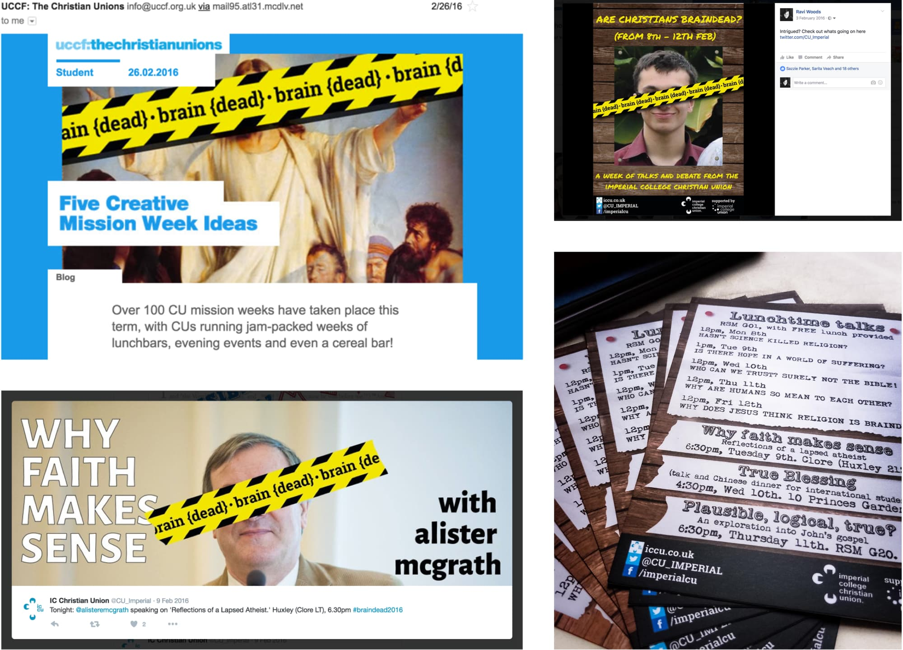

Are Christians Braindead?
January-February 2015
A range of branding produced for a week of events hosted by Imperial College's Christian Union. The week was aimed at an audience who may not understand how scientists can be Christians too.
Initial visual branding aimed to use different famous Christians as a provocation. Word based prototypes aimed to use different phrases people may use to describe Christians. It was felt that word based branding would be a struggle for Imperial's large number of international students.
Blindfolds are a sign of being blinded from reality, which may be how some describe Christianity. So, this imagery was used in design iterations.
The main flyer for the week, using the blindfold imagery, and a 'defaced' aesthetic.
Members of the society change their profile picture for the week. The blindfold were again used, with the aim of starting conversations.